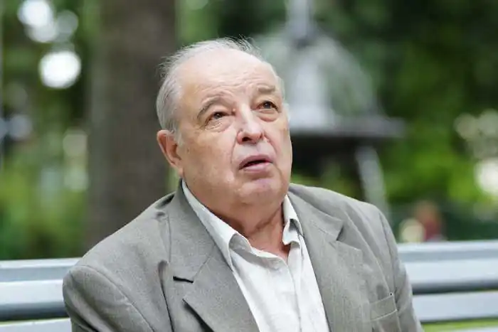
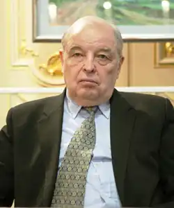

Микола Сингаївський
ДОРОГА ДО СЛОВА
[…] Народився 1936 року, місяця листопада, 12-го дня — в родині хліборобів, у невеличкому селі Шатрище на Поліщині. Вчився і працював, пізніше працював і вчився, — все життя я десь працював. В дитинстві ми були пастухами, нам першим відкривались весни, джерела і простір. Хто не купався в лугових росяних травах, не ходив за плугом, не обкопував дерева, не обсипав картоплі, не прополював грядок, не смакував першим огірком з грядки, той достеменно не знає, як пахне земля. Справжнім щастям для нас було скиртувати солому чи духмяне, з прив'ялою ромашкою, сіно, засинати прямо на скирті під серпневими зорями. Ми звикали до будь-якої роботи, нею росли і гартували юнацькі плечі. Так одразу по війні ми ставали старшими в сім'ї і власними мозолями відчули всі труднощі відбудови зруйнованого фашистами господарства. Навчаючись у Київському університеті, я позаштатно працював у редакціях різних газет. По закінченні вузу працював завідувачем відділу поезії "Літературної України", заступником директора Бюро пропаганди художньої літератури СПУ, завідуючим відділу літератури та мистецтва журналу "Ранок". Упродовж багатьох років — головним редактором журналу "Піонерія". Друкуватись я почав ще навчаючись у школі. Вихід на люди багатьом таким, як і я, початківцям давали районна газета "Радянське Полісся" та обласна "Радянська Житомирщина". Пам'ятаю, як школярем восьмого класу я зі сцени вітав депутата Максима Рильського, який приїздив до Житомира на зустріч із виборцями. Пізніше в газеті з'явилась добірка моїх віршів із напутнім словом сивочолого майстра. Його мудрі поради я чую і нині. Він учив любити слово, як садівник дерево. Сад поета не лише корінь і крона, а й тривожний світ людських почувань і пристрастей. Низький уклін вам, Максиме Тадейовичу, через літа і відстані. В 1958 році побачила світ перша моя збірка для дітей "Жива криничка". Схвальним словом про неї відгукнувся незабутній Михайло Панасович Стельмах. За все добре щиро вдячний йому донині. Відтоді прийшло до читача понад сорок моїх книжок — поетичних і прозових. З них — половина для дітей. І нині мене не полишає терпка надія: написати щось ніжне, цікаве і зворушливе для цього допитливого, вдячного читача — Дитини. Адже діти — наше дзеркало. І завжди хочеться бачити себе в ньому, в них — сонячних чистих дзеркалах майбутнього. В 1968 році поетичні книги "З березнем по землі", "Архіпелаги" були відзначені премією імені О. Бойченка. За книги "Вогневиця" і "Поступ" я удостоєний звання лауреата Республіканської комсомольської премії імені М. Островського. Скажу ще про один жанр мистецтва, до якого я небайдужий. Це — пісня. Вона володіє мною з дитинства, з юнацьких років. Я був гармоністом на сільських празникових гуляннях, гармошка для мене і нині дивовижний інструмент у розумінні настрою. Грав на струнних, кохався у народних мелодіях і нині записую народні пісні. Вони — чисте повітря поезії і нашої культури взагалі. Впродовж тридцяти років творчої праці я мріяв і намагався сам створити пісню. Багато мелодій, написаних композиторами на мої вірші, знайшли дорогу до серця людського. Стали "співучими" серед людей "Чорнобривці", "Безсмертник", "Полісяночка", "В краю дитинства", "Сонце в долонях", "Розляглося наше поле" та інші. Одна з моїх збірок має назву "Я родом із пісні" — свідчення любові автора до цього об'ємного і трудного жанру. Я вдячний Д. Павличкові, який у передмові до збірки моїх пісень "Безсмертник" писав: "Пісні М. Сингаївського близькі до фольклорних, ясні й прості за образною системою, але головне їхнє достоїнство в тому, що вони відбивають зворушення сучасної людини, яка шукає й знаходить основоположні моральні цінності в своєму зв'язку з рідною землею, бачить свою душу крізь чисті джерела того краю, де минулося її дитинство". [...] Мені пощастило з дорогами, їх випало на мою долю безліч. Завжди з насолодою згадую слова М. Пржевальського: "Життя цікаве ще й тим, що можна подорожувати". Я об'їхав увесь Радянський Союз. Від смерекових Карпат до сяючих і туманних Курильських островів, під палючої Кушки до засніженого Мурманська. Найдорожчим у всіх мандрівках були і залишаються зустрічі з людьми — різними і гарними. Їх дивовижні розповіді, неповторні лиця і біографії чекають ще віршів і прози. Одна з таких зустрічей — із відомим російським поетом Сергієм Наровчатовим на Далекому Сході. Нас поріднила Камчатка, гомін океану і тиша заклечаних, мов застиглих сопок. А ще — його фронтові вогненні дороги Великої Вітчизняної... Дружба наша не переривалась до останнього дня поета. Сергій Сергійович умів цінувати життя і слово, відкриваючи в ньому глибини історії, був щедрим на віддачу, навчаючи і старших, і нас, молодих. Подорожуючи, я відкрив для себе цілу країну поетів і революціонерів — чарівну Болгарію. Болгарський народ, його минуле і сучасне, Балкан і легендарна Шипка, трояндові долини і плодоносна Тракія посідають особливе місце в моїй творчості. Це тема всього мого життя. Вона певною мірою знайшла своє вираження у збірці "Лоза і камінь". Вивчаючи болгарську мову, я охоче перекладаю твори моїх добрих другарів. Я завжди відчував себе журналістом і публіцистом. Залишаюсь ним і досі. Тому газетна стаття, нарис, дорожні нотатки приводять мене до всюдисущих друзів-газетярів. Газета допомагає глибше проникнути в сутність суспільних явищ, охопити ритм і об'ємність життя. Вона для творчої людини — жива панорама. [...] В душі я відчуваю безмежну вдячність своєму краю. Там на все життя я відчув смак житнього хліба і джерельної води. Джерела, або живі кринички — так називають їх на Поліссі — б'ють тут з-під кожного пагорка. Звідси витоки моєї творчості. Поезія — мистецтво, що вірить і вірує у звичайні і прості речі — в правду і любов, в радощі і страждання, в зустрічі і розлуки... Тому автор глибоко впевнений, що вона, Поезія, живе і житиме від роду до роду, з віку до віку. МИКОЛА СИНГАЇВСЬКИЙ. (Передмова до збірки "Вогненна трава" — К.: "Молодь", 1986.) ОСНОВНІ КНИГИ М. СИНГАЇВСЬКОГО ЗЕМЛЕ, ЧУЮ ТЕБЕ. 1961 ГРОНО. 1962 МОЇ СТОРОНИ СВІТУ. 1963 МОЯ РАДИОСТАНЦИЯ. 1964 ВИБРАНІ ПОЕЗІЇ. 1966 З БЕРЕЗНЕМ ПО ЗЕМЛІ. 1968 АРХИПЕЛАГИ. 1968 ПОСТУП. 1969 ВОГНЕВИЦЯ. 1970 ИЗБРАННАЯ ЛИРИКА. 1971 Я РОДОМ ИЗ ПЕСНИ. 1971 АВТОГРАФ. 1972 ДОБРОСВІТ. 1974 СОЗВЕЗДИЕ ЛИДЫ. 1974 ПОКОЛІННЯ. 1975 ДОРОГОЮ ЗОРІ. 1979 ЗАПОВІТНИЙ ХЛІБ. 1982 ВНЕЗАПНЫЙ ВОЗРАСТ. 1982 СИНОВІ В ДОРОГУ. 1982 ЛОЗА І КАМІНЬ. 1984 ЗБІРКИ ДЛЯ ДІТЕЙ ЖИВА КРИНИЧКА. 1958 КОЛЕСО. 1966 МЕТЕЛИК У ПОРТФЕЛІ. 1967 ПЕРЕПІЛКА ЩАСТЯ НОСИТЬ. 1968 МІЙ КАЛЕНДАР. 1969 ЖУРАВЛИНЕ ЛІТО. 1970 СОНЦЕ ДЛЯ ВСІХ. 1975 БЕРЕЗНИЧКА. 1972 МИ — ГРОМАДЯНИ. 1976 Я ВЖЕ ВИРОСЛА. 1978 СТЕЖКА ДО КРИНИЦІ. 1980 ТЕПЛА ЗЕМЛЯ. 1982 КРАПЛІ ЗОРІ. 1985